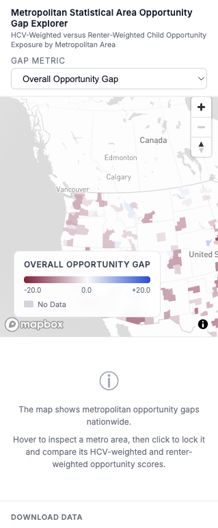
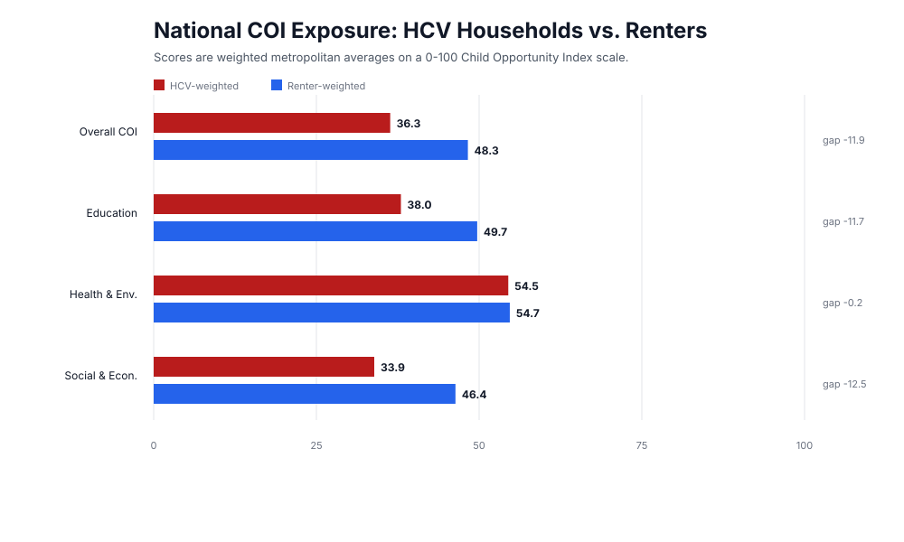
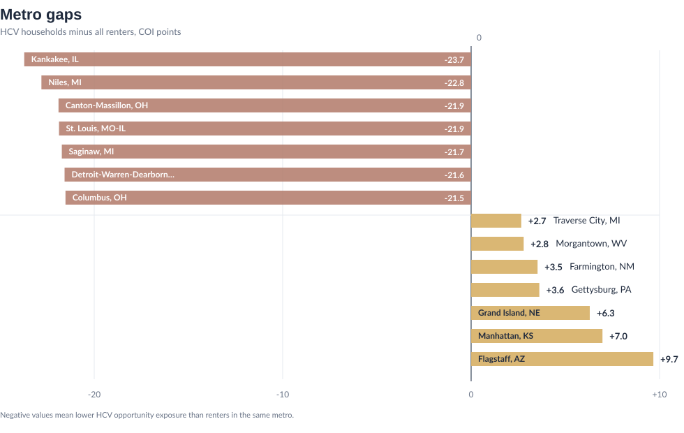
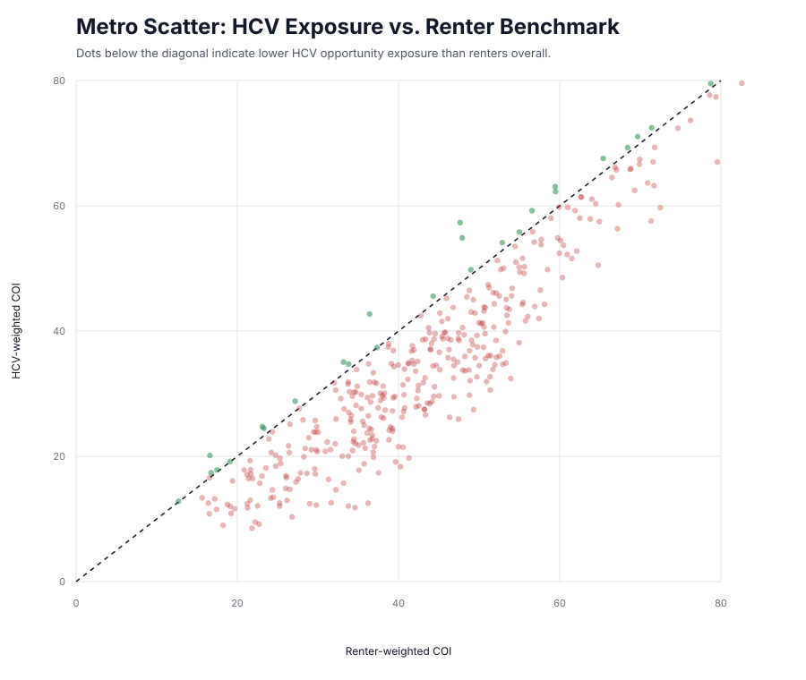

Housing Choice Voucher Research Platform
Do Housing Choice Vouchers Deliver Real Housing Choice?
A national visual report tracing voucher assistance from unmet rental need, through local program performance, to neighborhood opportunity after lease-up.
Enter ReportDo Housing Choice Vouchers Deliver Real Housing Choice?
A national visual report tracing voucher assistance from unmet rental need, through local program performance, to neighborhood opportunity after lease-up.
The project follows the voucher process from need, to program administration, to post-lease-up opportunity. It asks where eligible renters remain underserved, where PHA performance differs across local systems, and whether voucher households are reaching neighborhoods with opportunity conditions comparable to renters overall.
The Core Question: Does Assistance Become Real Choice?
The Housing Choice Voucher (HCV) program is built on a powerful promise: instead of limiting low-income households to a fixed public housing unit, it should help them rent in the private market and exercise meaningful choice over where they live. But that promise depends on more than the formal existence of a subsidy. It depends on whether assistance is available, whether local agencies and markets allow vouchers to turn into leases, and whether lease-up expands access to neighborhoods with real opportunity.
This project starts from that gap between policy design and lived access. A voucher can reduce rent burden, but it can also be blocked by scarcity, waiting lists, landlord refusal, payment standards, search deadlines, administrative friction, and unequal neighborhood markets. The central question is therefore not simply how many vouchers exist, but whether the voucher system actually moves households from unmet need toward stable housing and broader spatial choice.
What This Platform Does
This project assembles a national, multi-scale dataset to examine where the Housing Choice Voucher system succeeds, where it falls short, and where its promise of choice becomes constrained by local housing markets. Rather than treating vouchers as a single program output, the platform connects assistance need, PHA administration, lease-up conditions, and neighborhood opportunity across national, state, county, census tract, ZIP code, and PHA geographies where available.
The platform is designed as both a data summary and a critical research tool. It asks not only how many vouchers are in use, but whether assistance reaches eligible renters, whether local systems can convert vouchers into actual leases, and whether successful lease-up gives households access to neighborhoods comparable to the broader renter market. This matters because high aggregate program performance can coexist with deep unmet need, uneven local capacity, and unequal spatial outcomes.
A National Interactive Data Platform
This first interactive tool functions as the project's general data platform. It brings together HCV indicators and neighborhood context variables in a shared spatial interface so researchers can move from broad national patterns to specific local conditions.
Rather than presenting one fixed finding, the platform supports exploration: users can examine voucher households, subsidized housing patterns, renter demographics, poverty, rent burden, local housing conditions, and related neighborhood context across multiple geographies. This provides the empirical foundation for the more focused analytical modules that follow.
Due to file size limitations, this interactive data platform is not currently deployed through GitHub.

A Research Framework for Real Housing Choice
The interactive platform provides the broader empirical base; the rest of the report turns that base into three linked tests of whether voucher assistance becomes real housing choice. The framework treats the voucher not as a single benefit, but as a pathway shaped by scarcity, administration, landlord participation, payment standards, search time, and neighborhood opportunity.
- Unmet assistance need: the Voucher Gap Ratio asks where eligible renters remain underserved, and how the geography of shortage changes when need is viewed through renter, child, poverty, elderly, and racial equity lenses.
- Administrative conversion: the PHA Level Performance Metrics ask whether local systems can convert available assistance into actual leases, and where high aggregate utilization may still mask issued-but-not-leased vouchers, fiscal constraints, portability effects, or local market bottlenecks.
- Post-lease-up opportunity: the Opportunity Gap asks whether households who successfully lease up are reaching neighborhoods comparable to the broader renter market, or whether voucher use remains spatially constrained after the formal search process ends.
Voucher Access Pathway and Research Modules
Why Start from the User Perspective
Existing research shows that the strongest barriers often appear between formal eligibility and actual housing outcomes. Voucher holders may face closed waiting lists before assistance is available, search pressure after issuance, landlord refusal during the housing search, administrative delays before lease approval, and unequal neighborhood access even after move-in. Starting from the user perspective makes these hidden frictions visible.
This matters because standard program measures can make the system look more complete than it feels to households trying to use it. A voucher may be funded but unavailable, issued but unused, leased but geographically constrained, or counted as a success while still leaving a family in a low-opportunity environment. Following the user pathway helps connect program performance to lived access.
- Before entry: limited supply, closed waiting lists, lotteries, and long delays determine who ever receives assistance.
- After issuance: the voucher creates a time-limited search process in which households must find an eligible unit, landlord, rent level, and inspection timeline that all align.
- During the search: landlord refusal, source-of-income discrimination, limited listings, weak information, and payment standards can narrow the geography of realistic choice.
- At lease-up: administrative approvals, inspections, portability rules, and market rents can determine whether an apparently viable unit becomes an actual subsidized lease.
- After move-in: the location of the leased unit shapes whether the voucher delivers only rent relief or also access to safer, better-resourced, and more opportunity-rich neighborhoods.
In short: this report evaluates HCV not only as a subsidy program, but as a chain of access. Each module asks where that chain breaks: before assistance reaches eligible renters, during local program administration, or after lease-up when the geography of opportunity is finally revealed.
PHA Level Performance Metrics
This national interactive map links PHA-level HCV administrative indicators with the broader geography of housing need and local conditions, offering a first view of where formal assistance translates into real lease-up capacity.
What the PHA Performance Pattern Reveals
At the PHA level, the performance patterns reveal a system that is broadly operating at or near full capacity, but with significant underlying heterogeneity and structural inefficiencies. Median utilization rates hover at approximately 100%, with even the lower quartile above 99%, indicating that most housing authorities are successfully leasing nearly all available vouchers. This is reinforced by high success rates (median ≈ 97%), suggesting that once vouchers are issued, they are highly likely to be converted into active leases. However, the presence of utilization rates exceeding 100% and extreme maximum values signals measurement inconsistencies, likely driven by portability dynamics or reporting discrepancies, rather than true over-utilization.
At the same time, the distribution of issued-but-not-leased vouchers (mean ≈ 133, with a long right tail) highlights persistent frictions in voucher absorption for a subset of PHAs, pointing to localized market constraints such as landlord participation or housing availability. Financial indicators further underscore disparities: while median reserve balances are substantial (~$140K), the wide range up to over $1.3 million suggests uneven fiscal capacity across agencies. Similarly, cost per voucher varies dramatically, with a heavy right tail, indicating that some PHAs operate in significantly higher-cost environments or face inefficiencies in program delivery.
Portability plays a relatively minor role for most PHAs (median port-in rate = 0), but the existence of high outliers implies that certain jurisdictions function as net receivers in regional housing markets, potentially inflating their apparent utilization. Overall, the data suggests a system that is efficient on average but uneven in practice, where high aggregate performance masks localized bottlenecks, fiscal disparities, and measurement distortions driven by inter-jurisdictional dynamics.
Voucher Gap Ratio
This module maps where eligible renters face the largest mismatch between housing need, voucher supply, and access to assistance — at the state, county, and census tract level.
What the Voucher Gap Ratio Reveals
Voucher Gap Ratio
The raw voucher gap ratio reveals a stark mismatch between the number of housing vouchers currently in use and the number of households eligible under a universal voucher framework. The highest gaps appear in large and fast-growing states — California, Texas, New York, Florida, and much of the Midwest (e.g., Illinois, Michigan, Ohio) — where high housing costs and large renter populations drive substantial unmet demand. However, this raw measure is heavily influenced by scale: states with larger populations naturally exhibit larger absolute gaps. As a result, while the raw ratio highlights where the most households are underserved, it does not fully capture relative need or intensity of shortage across smaller states.
Renter-Weighted Gap Ratio
When the gap is normalized by the renter population, a different geography of vulnerability emerges. Smaller and mid-sized states, particularly in the Mountain West (e.g., Wyoming, Montana) and parts of the Midwest and South, show disproportionately high gaps relative to their renter base. This indicates that even though these states may have fewer renters overall, a much larger share of their renter population lacks access to vouchers. In contrast, large coastal states remain important in absolute terms but appear less extreme once adjusted for population. This measure reveals that housing insecurity is not just an urban or large-state problem — it is deeply structural across smaller housing markets as well.
Children-Weighted Gap Ratio
Weighting the gap by households with children highlights a more concentrated and policy-relevant vulnerability pattern. The highest gaps cluster in the South and parts of the Midwest, particularly Texas, Louisiana, Mississippi, Georgia, and Oklahoma. These regions combine higher child poverty rates with limited voucher coverage, suggesting that families with children face disproportionately high barriers to stable housing. Compared to the renter-weighted map, the spatial pattern becomes more regionally concentrated, emphasizing that housing assistance gaps intersect strongly with intergenerational disadvantage.
Elderly-Weighted Gap Ratio
When weighted by elderly households, vulnerability shifts somewhat toward states with aging populations and fixed-income renters, including parts of the Midwest, Northeast, and select Southern states. The gap here reflects the structural challenge of housing affordability for seniors, who are less able to adjust income in response to rising rents. While the overall intensity of gaps may appear lower than for children, the implications are significant: even moderate gaps translate into high risk of housing instability for elderly populations due to income rigidity and longer program reliance.
Households of Color-Weighted Gap Ratio
Weighting by households of color reveals a distinctly uneven and inequitable geography. The largest gaps are concentrated in California, Texas, parts of the Southeast, and select Midwestern states, where large populations of households of color coincide with structural barriers in housing markets. This pattern reflects not only income disparities but also historical and ongoing discrimination, segregation, and differential access to housing assistance programs. Compared to the unweighted map, the disparities become more pronounced, underscoring that voucher shortages disproportionately affect racially marginalized communities.
Poverty-Weighted Gap Ratio
The poverty-weighted map produces the most policy-critical insight: the highest gaps are concentrated in Southern states (e.g., Mississippi, Louisiana, Alabama), parts of Texas, and sections of the Midwest, where poverty rates are highest relative to housing support. This indicates that the areas with the greatest need for housing assistance are also those where the voucher system falls shortest. Unlike the raw map, which highlights scale, this measure highlights depth of deprivation — revealing a clear misalignment between program reach and need.
Effect of Changing AMI Thresholds
Expanding eligibility from 30% AMI to 50% AMI and beyond systematically reshapes the geography of the gap:
- At 30% AMI: The gap is most concentrated among the poorest households, with strong clustering in the South and high-poverty regions. This scenario highlights deepest need and extreme deprivation.
- At 50% AMI: The gap expands significantly in large states and metropolitan regions, including California, Texas, and New York. This reflects the inclusion of working-class households who are cost-burdened but not extremely poor, broadening the scope of housing insecurity.
- At 80% AMI and up: The gap becomes more geographically diffuse, spreading into higher-cost housing markets nationwide, including suburban and coastal regions. This demonstrates that housing affordability challenges extend well beyond traditionally defined low-income groups, particularly in tight rental markets.
Opportunity Gap
The PHA performance metrics show whether local agencies can convert voucher assistance into actual leases. But lease-up is not the end of the housing choice question. Once a household succeeds in using a voucher, the next test is where that voucher can realistically be used.
This module maps metropolitan statistical area-level gaps between the neighborhood opportunity exposure of HCV households and the broader renter population, showing where voucher households are concentrated in lower-opportunity or higher-opportunity metropolitan areas relative to renters overall.

Why Opportunity Matters After Lease-Up
Even after a household has endured a long wait, received a Housing Choice Voucher, found a qualifying unit, and successfully moved in, that does not necessarily mean the program has delivered real housing choice. This section uses the Child Opportunity Index (COI) not as a supporting detail, but as a central measure of whether housing assistance actually translates into access to opportunity. COI is a composite measure of neighborhood conditions and resources linked to children's healthy development. In its current form, it brings together 44 neighborhood-level indicators across three domains: education, health and environment, and social and economic opportunity. Read at the metropolitan statistical area level, the question becomes sharper: not simply whether HCV helps families lease a unit, but whether it helps them reach neighborhoods with meaningfully stronger opportunity structures. Research on voucher mobility and landlord participation suggests that neighborhood outcomes are shaped by far more than household preference alone. Search constraints, landlord gatekeeping, time pressure, and administrative friction all narrow where voucher holders can realistically succeed. For that reason, unequal opportunity outcomes should not be treated as an incidental consequence after lease-up; they are one of the clearest tests of whether the promise of "choice" has actually been fulfilled.
National Pattern: Lease-Up Does Not Equal Equal Opportunity
The national comparison shows a clear gap between where voucher households live and where renters overall live. Across metropolitan areas, the HCV-weighted overall Child Opportunity Index score is 36.3, compared with a renter-weighted benchmark of 48.3. In other words, successful lease-up does not necessarily mean access to comparable neighborhood opportunity.
This finding should be read as descriptive rather than causal. The chart does not prove that vouchers cause lower-opportunity placements, but it does show that the observed geography of voucher use is associated with systematically lower opportunity exposure. That distinction matters: the issue is not simply whether households use assistance, but where that assistance can realistically be used.
Where the Gap Becomes Visible
The metro-level extremes make the national pattern more concrete. In places such as Kankakee, Niles, Canton-Massillon, St. Louis, and Detroit, voucher households are positioned far below the local renter benchmark. These gaps suggest that local housing markets may be narrowing the geography of voucher use in ways that are not visible from lease-up rates alone.
The positive exceptions are just as important. Metro areas such as Flagstaff, Manhattan, Grand Island, Gettysburg, and Farmington show HCV-weighted opportunity exposure at or above the renter benchmark. These cases suggest that lower-opportunity placement is not inevitable. Local conditions, including landlord participation, payment standards, mobility supports, and administrative practices, may shape whether vouchers function only as affordability assistance or also as tools for expanding spatial access.
{kind=link}

{kind=link}

A Structural Pattern, Not a Few Outliers
The scatter plot reinforces the broader pattern. Each point represents a metropolitan area, comparing renter-weighted COI exposure with HCV-weighted COI exposure. Most points fall below the equality line, meaning voucher households are exposed to lower-opportunity neighborhoods than renters overall in most metropolitan areas.
This does not identify the exact mechanism behind each metro's gap. It cannot separate the effects of landlord refusal, search constraints, payment standards, administrative burden, or rental supply. But it does show that the opportunity gap is widespread enough to be treated as a core dimension of HCV performance, not a side issue.
{kind=link}

What the Metropolitan Pattern Reveals
Read together, these figures suggest that the Housing Choice Voucher program often succeeds at subsidizing rent without fully delivering spatial choice. Housing assistance still matters for affordability and stability, but affordability and opportunity are not the same outcome.
The positive metro exceptions show that broader spatial access is possible. The dominant pattern, however, suggests that many local voucher systems still need stronger landlord engagement, better search support, more flexible payment standards, source-of-income protections, and mobility-oriented program design.
In short, the opportunity gap reframes HCV performance after lease-up. It asks whether the program is only helping families rent somewhere, or whether it is helping them rent in places that expand access to opportunity. The evidence suggests that, across much of the country, the answer remains incomplete.
Opportunity Metric Guide
| Indicator | Definition | Interpretation |
|---|---|---|
| Overall Opportunity Gap | Difference between the metropolitan statistical area-level HCV-weighted Child Opportunity Index and the renter-weighted Child Opportunity Index (hcv_coi_idx - renter_coi_idx). | Negative values mean HCV households are located in lower-opportunity neighborhoods than renters overall; positive values mean the reverse. |
| Education Opportunity Gap | Difference between HCV-weighted and renter-weighted education domain scores (hcv_coi_edu - renter_coi_edu). | More negative values indicate voucher households are more concentrated in neighborhoods with weaker education opportunity. |
| Health & Environment Gap | Difference between HCV-weighted and renter-weighted health and environment domain scores (hcv_coi_health_env - renter_coi_health_env). | More negative values indicate voucher households are more concentrated in neighborhoods with weaker health and environmental opportunity. |
| Social & Economic Gap | Difference between HCV-weighted and renter-weighted social and economic domain scores (hcv_coi_eco - renter_coi_eco). | More negative values indicate voucher households are more concentrated in neighborhoods with weaker social and economic opportunity. |
| HCV-Weighted Opportunity Score | Metropolitan statistical area-average neighborhood opportunity exposure for HCV households, calculated by weighting tract opportunity scores by HCV household counts. | Higher values mean voucher households are, on average, located in higher-opportunity tracts within that metropolitan area. |
| Renter-Weighted Opportunity Score | Metropolitan statistical area-average neighborhood opportunity exposure for renter households overall, calculated by weighting tract opportunity scores by renter counts. | This serves as the benchmark for understanding whether voucher households are reaching neighborhoods comparable to the broader renter market. |
Definitions & Methods
PHA Performance Indicator Definitions
| Indicator | Definition | Calculation |
|---|---|---|
| Utilization Rate | Measures what share of a housing authority's voucher budget is currently leased up in vouchers. | Yearly mean of (Vouchers Under Lease / Total Vouchers) |
| Success Rate | The percent of vouchers an agency has issued to families in a year that result in an actual lease and assistance contract with a landlord. | Yearly mean of (Vouchers Under Lease / (Vouchers Under Lease + New Vouchers Issued but not under HAP contract)) |
| Cost Per Voucher | Average monthly HAP expenditure per leased voucher, covering all voucher program types including Litigation, Mainstream, Homeownership, MTW, Family Unification, NED, Portable, HOPE VI, Tenant Protection, VASH, DHAP-HCV, and FSS Escrow. | Yearly mean of (Sum of all monthly HAP expenses / Vouchers Under Lease) |
| Port-In Rate | Share of leased vouchers that are portable vouchers administered by the PHA on behalf of another agency. | Yearly mean of (Portable Vouchers Administered (Port-In) / Vouchers Under Lease) |
| Voucher Gap Ratio | Mismatch between housing need and voucher supply at the state, county, and tract level. | Actual Vouchers / Potential Vouchers × Renter Population weight |
Datasets & References
Primary Data Sources
- Picture of Subsidized Households (PSH) — National, state, county, census tract, and PHA-level subsidized housing counts. Retrieved from huduser.gov/portal/datasets/assthsg.html
- VMS Data (Voucher Management System) — PHA-level monthly leasing, utilization, issuance, and financial indicators. Retrieved from hud.gov/helping-americans/public-indian-housing-program-support-division
- Approximate PHA Level Jurisdiction / Service Boundaries — Estimated housing authority service areas. Retrieved from hudgis-hud.opendata.arcgis.com
- U.S. Census Bureau — American Community Survey 5-Year Estimates (2018–2022). Renter population, poverty, rent burden, and demographic context. Retrieved from data.census.gov
- U.S. Department of Housing and Urban Development (HUD), Office of Policy Development and Research — CHAS (Comprehensive Housing Affordability Strategy) Data based on 2018–2022 ACS 5-Year Estimates (2025). Retrieved from huduser.gov/portal/datasets/cp.html
References
- Center on Budget and Policy Priorities. (2019, March 4). Housing voucher success and utilization indicators, and understanding utilization data. https://www.cbpp.org/research/housing/housing-voucher-success-and-utilization-indicators-and-understanding-utilization
- The Housing Initiative at Penn. (2021). Exploring a universal housing voucher. https://www.housinginitiative.org/universal-voucher.html